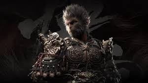
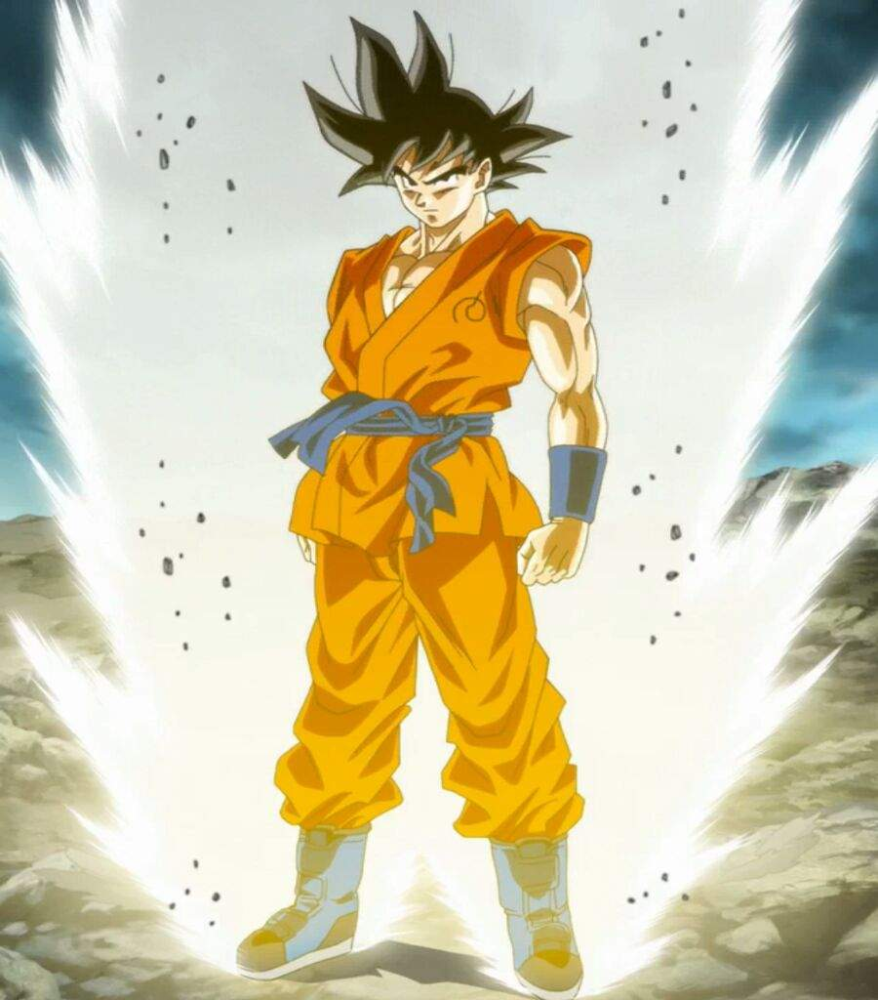

um macaco mágico da mitologia chinesa que é o protagonista da clássica obra literária chinesa "Jornada ao Oeste". Son Wukong é conhecido por sua força sobre-humana, agilidade e habilidades mágicas.
Akira Toriyama, o criador de Dragon Ball, foi inspirado pela personalidade e habilidades de Son Wukong ao criar Goku. Algumas das características que Goku herdou de Son Wukong incluem:
-Força sobre-humana: Tanto Son Wukong quanto Goku possuem força física incrível, que os permite realizar feitos impressionantes.
-Agilidade e velocidade: Ambos os personagens são conhecidos por sua agilidade e velocidade, que os permitem se mover rapidamente e evitar ataques.
- Personalidade otimista e determinada: Son Wukong e Goku compartilham uma personalidade otimista e determinada, que os motiva a superar obstáculos e alcançar seus objetivos.
No entanto, Goku também tem características próprias que o distinguem de Son Wukong, como sua personalidade mais inocente e sua capacidade de se transformar em Super Saiyajin.
A influência de Son Wukong em Goku é um exemplo de como a mitologia e a cultura chinesa influenciaram a criação de Dragon Ball, uma série que se tornou um ícone da cultura popular japonesa.
A ideia de "Ki" ou "energia vital" em Dragon Ball é inspirada em conceitos budistas e taoístas.
No contexto de Dragon Ball, o Ki é uma forma de energia que os personagens podem controlar e utilizar para realizar feitos incríveis, como lançar ataques de energia ou voar. Essa ideia de Ki é baseada em conceitos semelhantes encontrados no budismo e no taoísmo, que se referem à energia vital ou espiritual que flui através de todos os seres vivos.
A influência desses conceitos em Dragon Ball é um exemplo de como a série combina elementos de diferentes culturas e filosofias para criar um universo único e fascinante.
A ideia de "Ki" em Dragon Ball é inspirada em conceitos como:
Qi (ou Chi): um conceito tradicional chinês que se refere à energia vital ou força vital que flui através de todos os seres vivos.
Prana: um conceito hindu e budista que se refere à energia vital ou respiração da vida.
No contexto de Dragon Ball, o Ki é uma forma de energia que pode ser controlada e utilizada pelos personagens para realizar feitos incríveis. Isso inclui:
Lançar ataques de energia: os personagens podem lançar ataques de energia Ki, como o Kamehameha de Goku.
Voar: os personagens podem utilizar seu Ki para voar e se mover rapidamente.
- Aumentar a força: os personagens podem utilizar seu Ki para aumentar sua força e realizar feitos incríveis.
A utilização do Ki em Dragon Ball é uma forma de representar a conexão entre a energia vital e a força física, e é um elemento importante da série.
